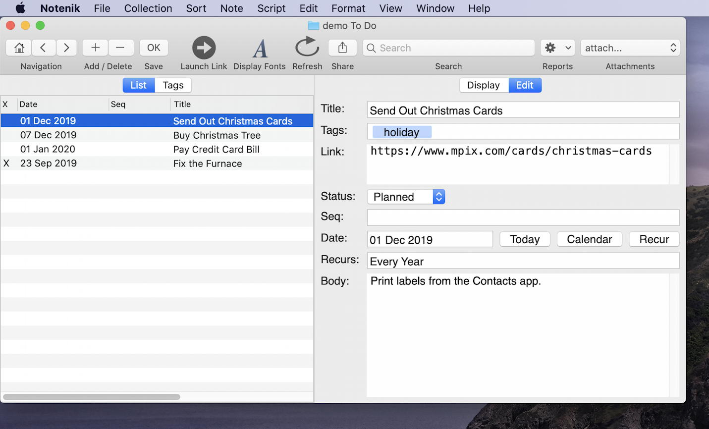

Notenik Project # 3: Create a To Do List
Published 20 Dec 2019
This post is the third in a series designed to gradually explain the use of the Mac App Notenik for increasingly complicated and sophisticated tasks.
Before proceeding, you might want to review some of the basics covered in earlier projects, if these aren’t already fresh in your mind:
Motivation
I like to keep a “to do” list to help remind me of various tasks I’d like to perform. However, I don’t want to invest a great deal of time or money in a specialized tool that is overly fiddly. So I use Notenik to track these sorts of things.
Step 1: Create a New Collection
Name the folder ‘To Do’ or ‘Tasks’ or something similar. Locate the new folder in your Dropbox folder or in iCloud drive if you’d like to sync this Collection to the cloud and/or to other devices. Or put it in your Documents folder: anyplace that makes sense to you is fine.
Step 2: Configure with Additional Fields
Once you’ve selected the folder for the Collection, Notenik will present you with the Preferences for this Collection. In addition to the usual four fields (Title, Tags, Link and Body) you’ll want to select the Status, Date and Recurs fields by checking the boxes next to these Field names. You might also wish to include the Seq field if you’d like to identify a priority for each item. Click OK once you’re done.
Step 3: Start Adding Some Tasks
Enter a unique title for each task: something brief that will serve to identify the action.
Use the Link field if there’s a website involved in completing this task; leave it blank otherwise.
Use the Tags field if you’d like to categorize your actions; this will allow you to see them grouped by category on the Tags tab.
Enter any details about the task in the Body field. Feel free to use the Markdown syntax to format these details.
Step 4: Enter Target Dates for Completion
You may use the Date field to enter the date on which you wish to complete this task, or on which you wish to be reminded about it. You can enter a complete or partial date (just the year, or the year and month) in pretty much any recognizable format. Hit the Calendar button to be presented with an easily navigable calendar you can use to select your desired date. Hit OK when done.
Step 5: Sort the List in Tasks by Date Sequence
Select the Tasks by Date option from the Sort menu, or use the handy keyboard shortcut displayed in the menu dropdown. The earliest dates will now sort to the top of the list. Note that you can change the sort sequence to another option whenever you find it useful: it’s not a permanent selection, though your last choice for a Collection will be remembered the next time you open it.
Step 6: Enter Recurs Info
If a task is something to be done on a regular basis, then you can enter the frequency of occurrence in the Recurs field. You can use most simple natural language constructs in this field: things like ‘every week’ or ‘every month’ should work as expected.
Step 7: Keep the Status field Up-To-Date
Each item’s status can be set via the available dropdown menu on the Edit tab. The default status values run from ‘Idea’ through ‘Closed’ in what is meant to be an approximate lifecycle sequence. Status values of ‘Completed’ on up will sort to the bottom of the Tasks by Date sequence, and will be marked with an ‘X’ on the List to indicate their completion. If you’d like to modify the values available on the Status dropdown, then see the User Guide for info on how to do this.

Step 8: Make It Essential
You may wish to use the option under the File menu to Make This Collection Essential. This means that it will open automatically whenever you launch Notenik, and that you can always get back to it via a quick keyboard shortcut.
Step 9: Memorize a Few Handy Shortcuts
Notenik has a few keyboard shortcuts that can prove particularly handy when managing a list of tasks.
- CMD-E – Open Essential Collection – This will open your Essential Collection, or take you back to its window (from another Notenik collection window) if it’s already open.
- CMD-I – Increment – If the Note has a Date, and the List is sorted by Date, then this command will bump up the Date value by one day.
- CMD-K – Close Note – If the selected Note has a Recurs value, then this command will execute the Recurs logic for the Note, bumping up the Date by one cycle. If the selected Note does not have a Recurs value, then the Note’s Status field will be set to Completed.
- CMD-U – Catch Up Daily Tasks – If you have one or more tasks with Recurs values of ‘Daily’, then this command will bring all of their Date values up to the current date.
Wrapping Up
And that’s it for Project # 3! As always, feel free to send any questions or comments to hbowie@notenik.net. Looking forward to hearing from you!